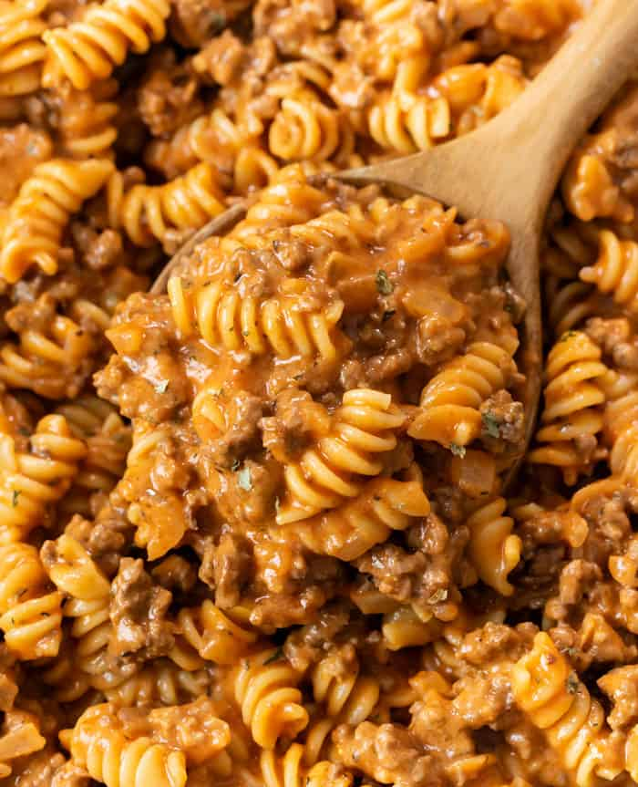

Ground Beef Pasta

Description
Imagine creating a beautiful Italian dish with just the skills needed to prepare Hamburger Helper type of meals? This recipe is for you enthusiasts that want to create a delicious and
incredibly easy dish for you and your family. While Hamburger Helper might not always hit the mark, this dish will definitely do that for you. Once you try it, you'll be wanting to make
it for every occasion. Let's get started by going over the ingredients, shall we?
Ingredients
- 1 + 1/2 lbs. ground beef, 85% lean
- 1 small yellow onion, diced
- 3 cloves garlic, minced
- 2 teaspoons Italian seasoning
- 1 teaspoon kosher salt
- 3 Tablespoons flour (optional)
- 1 Tablespoon Worchestire Sauce
- 16 oz tomato sauce
- 1 cup chicken broth
- 1/2 cup half and half (half cream, half milk)
- 1 cup shredded cheddar cheese
- 1/2 pound Rotini pasta
Steps
- Shred the cheese and set it aside along with the half and half. We don't want those to be cold when we add them to the sauce.
- Cook and crumble the ground beef over medium heat. Add the onions halfway through and cook until softened.
- Drain grease. Add the garlic and cook for 1 minute.
- Add salt, Worchestire sauce and flour. Stir to combine and cook for 3 minutes to remove raw flour taste.
- Add chicken broth and use a silicone spatula to clean the bottom of the pan. Add the tomato sauce and Italian seasoning. Bring to a boil, then reduce to a simmer. Cook for 15 minutes while you start boiling water for the pasta. Once the water is boiling, add the pasta and cook for 7 minutes or per package instructions.
- Slowly add in the half and half to the sauce, stirring as you go.
- Reduce heat to low and slowly sprinkle in the cheese. Stir to combine. Drain the pasta and add it to the sauve. Serve with garlic bread with cheese.